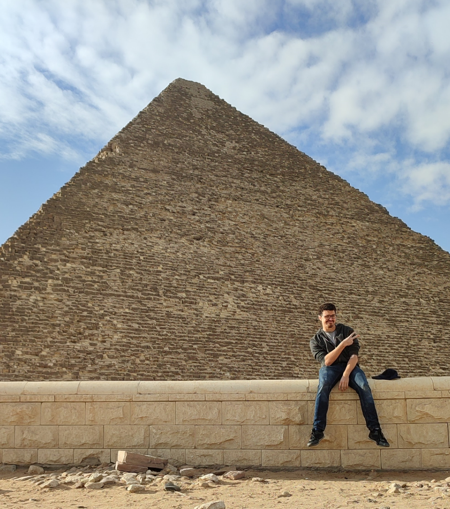
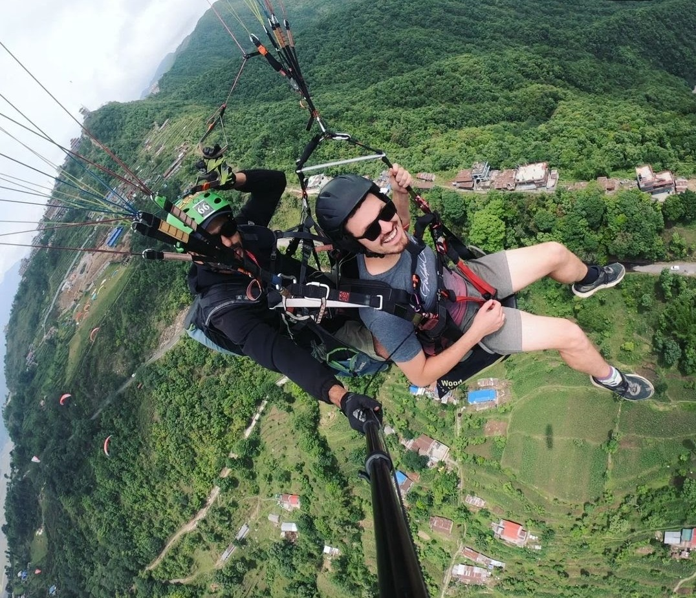

Photos



Mr Steer is a dedicated teacher with a passion for maths, economics, and business studies. Since March 2024 he has taught in five schools across the globe; some students call him Mr Steer, others prefer "Mr J." He first discovered his love of teaching while helping younger students during his own school years, and maths came naturally to him from the start. Moving between schools has been an adventure, letting him experience new cultures and teaching styles along the way. His favourite colour is blue, and he can never say no to a stack of fluffy pancakes or a strawberry milkshake. If he's eating out, you'll usually find him at Al Shofra in Salmiya, Kuwait; Italy holds a special place in his heart for its food culture. His favourite maths joke: "Why was 6 afraid of 7? Because 7 ate 9." Solving equations is his favourite kind of lesson, and on the GBA calendar he's always looking forward to Sports Day and the Maths Academia Cup.
In Mr Steer's classroom, learning and innovation go hand in hand. With 7 years of experience, he builds lessons that flex to different learning needs, offering tasks pitched at varying levels of challenge. Tools like Retrieval Starter Grids and differentiated worksheets keep curiosity alive, while technology helps him streamline marking and give personalised feedback across the many subjects and schools he's taught in. More than a teacher, he's a mentor and a guide; leaving a lasting impression on every student who crosses his path.

